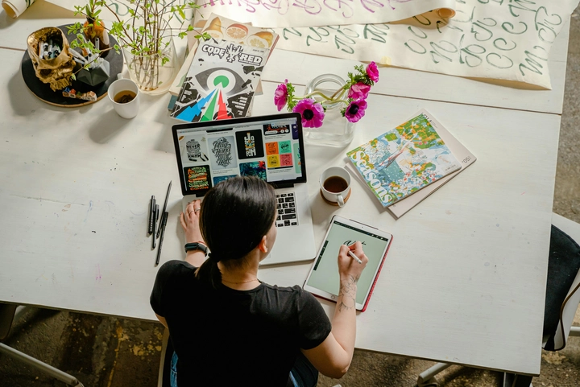
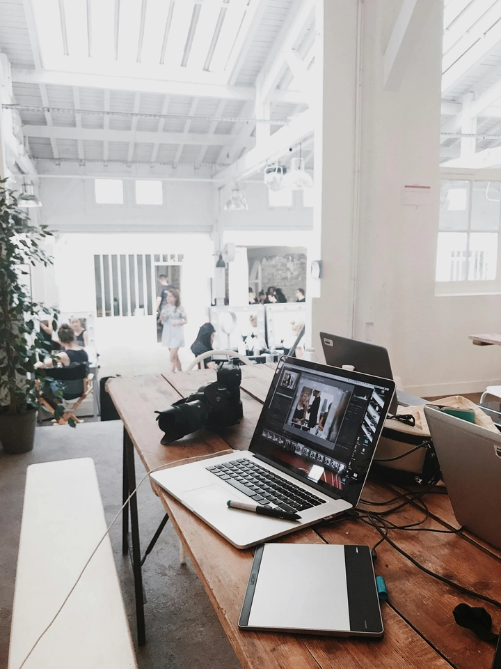
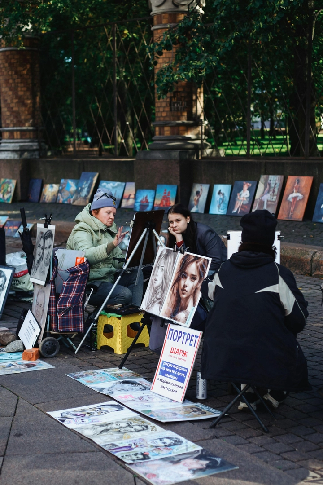
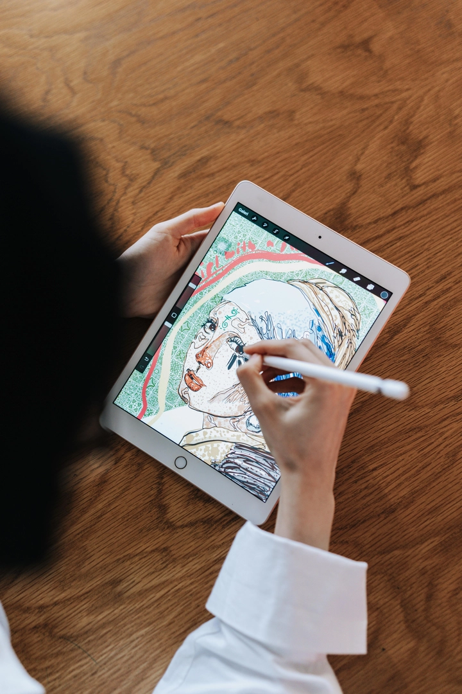

Digital Painting – Hướng Dẫn Hội Họa Kỹ Thuật Số Toàn Diện Cho Nghệ Sĩ Hiện Đại
Digital Painting – hay còn gọi là hội họa kỹ thuật số – là một lĩnh vực nghệ thuật đang bùng nổ trong thời đại số hóa. Khác với hội họa truyền thống, Digital Painting sử dụng các công cụ số như tablet, pen display và phần mềm chuyên dụng để tạo ra tranh với hiệu ứng, màu sắc và texture phong phú. Sự linh hoạt của Digital Painting giúp nghệ sĩ dễ dàng thử nghiệm, sửa lỗi và triển khai ý tưởng mà không bị hạn chế bởi vật liệu vật lý.
Từ việc sáng tạo nhân vật, bối cảnh, cho tới minh họa sách truyện, quảng cáo hay concept art trong game và phim, Digital Painting đã trở thành một phần không thể thiếu trong nghệ thuật hiện đại.
Hôm nay, hãy cùng TrithucWorld khám phá chi tiết 10 khía cạnh quan trọng của Digital Painting, từ công cụ, kỹ thuật, phong cách cho đến xu hướng và cộng đồng sáng tạo.
1. Giới thiệu về Digital Painting
Digital Painting, hay còn gọi là hội họa kỹ thuật số, là sự giao thoa giữa nghệ thuật truyền thống và công nghệ hiện đại, mở ra một kỷ nguyên mới cho những người yêu thích vẽ tranh. Thay vì sử dụng các chất liệu vật lý như giấy, canvas, sơn dầu, màu nước hay bút chì, Digital Painting dựa vào các thiết bị số như màn hình cảm ứng, tablet, pen display và phần mềm chuyên dụng để tạo ra các tác phẩm sống động. Nhờ vậy, nghệ sĩ có thể vẽ, tô màu, tạo texture, hiệu ứng ánh sáng và shadow một cách linh hoạt, đồng thời dễ dàng chỉnh sửa hoặc thử nghiệm nhiều phong cách mà không gặp giới hạn của vật liệu truyền thống.
Lịch sử của Digital Painting bắt đầu từ những năm 1980, khi các phần mềm đầu tiên như MacPaint và Deluxe Paint ra đời, cho phép người dùng tạo ra hình ảnh bằng máy tính cá nhân. Những năm sau đó, cùng với sự phát triển của công nghệ đồ họa, phần mềm vẽ số như Adobe Photoshop, Corel Painter, Krita hay Procreate ra đời, mở rộng khả năng sáng tạo và phổ biến Digital Painting trên toàn thế giới. Ngày nay, Digital Painting không chỉ là công cụ nghệ thuật mà còn trở thành một phần không thể thiếu trong thiết kế game, phim hoạt hình, quảng cáo, minh họa sách truyện, concept art, và thậm chí là các dự án sáng tạo tương tác trên VR/AR.

Một trong những điểm mạnh lớn nhất của Digital Painting chính là khả năng thử nghiệm và sửa lỗi gần như vô hạn. Nghệ sĩ có thể sử dụng layer để tách các chi tiết, áp dụng brush đa dạng, blend màu sắc, tạo ánh sáng và bóng đổ một cách tinh tế, đồng thời thêm các hiệu ứng đặc biệt mà trong hội họa truyền thống rất khó thực hiện. Việc lưu trữ và chia sẻ tác phẩm cũng trở nên dễ dàng hơn bao giờ hết, từ portfolio trực tuyến đến các nền tảng cộng đồng như ArtStation, DeviantArt hay Behance, giúp các tác phẩm kỹ thuật số nhanh chóng tiếp cận khán giả toàn cầu.
Hơn nữa, Digital Painting còn mang đến cơ hội sáng tạo không giới hạn, từ việc vẽ các cảnh quan, nhân vật tưởng tượng, sinh vật huyền bí, đến việc thử nghiệm phong cách trừu tượng hay siêu thực. Nghệ sĩ có thể kết hợp hình ảnh thực tế, texture 3D, và các công cụ số để tạo ra tranh phong phú, độc đáo. Đây chính là lý do Digital Painting ngày càng được ưa chuộng trong giáo dục nghệ thuật, studio thiết kế, và cộng đồng sáng tạo trực tuyến, trở thành lựa chọn hoàn hảo cho những ai muốn kết hợp khả năng mỹ thuật với công nghệ hiện đại.
Digital Painting không chỉ đơn thuần là một phương tiện sáng tác; nó là một nghệ thuật toàn diện, nơi trí tưởng tượng, kỹ năng mỹ thuật và công nghệ hội tụ, giúp nghệ sĩ tạo ra những tác phẩm mang giá trị thẩm mỹ cao, đồng thời mở ra cơ hội nghề nghiệp đa dạng trong nhiều lĩnh vực sáng tạo. Đây cũng là lý do khiến Digital Painting trở thành một xu hướng nghệ thuật quan trọng trong thế kỷ 21, gắn liền với sự phát triển của internet, công nghệ số và cộng đồng nghệ sĩ toàn cầu.
2. Các công cụ phổ biến trong Digital Painting
Để vẽ tranh kỹ thuật số, việc lựa chọn công cụ phù hợp là yếu tố then chốt quyết định hiệu quả sáng tác. Digital Painting kết hợp phần mềm và phần cứng để mang đến trải nghiệm giống như vẽ tranh truyền thống nhưng với nhiều ưu điểm vượt trội. Về phần mềm, các ứng dụng phổ biến gồm Adobe Photoshop, nổi tiếng với khả năng tùy chỉnh brush, layer và hiệu ứng màu sắc; Corel Painter, mô phỏng chất liệu sơn dầu, màu nước và pastel một cách chân thực; Procreate, thân thiện với iPad, tiện lợi cho việc vẽ di động; Krita, mã nguồn mở, thích hợp cho minh họa và concept art; cùng với Clip Studio Paint, nổi bật trong lĩnh vực truyện tranh và manga. Mỗi phần mềm đều cung cấp bộ brush đa dạng, layer, masking, hiệu ứng ánh sáng và filter, cho phép nghệ sĩ thỏa sức sáng tạo.
Về phần cứng, các thiết bị quan trọng gồm tablet, pen display, màn hình cảm ứng và stylus. Các thương hiệu phổ biến như Wacom, Huion, XP-Pen cung cấp các sản phẩm với độ nhạy áp lực cao, cho phép kiểm soát đường nét, độ đậm nhạt và áp lực tương tự cọ hay bút thật. Sự kết hợp giữa phần mềm và phần cứng tạo ra môi trường vẽ gần gũi với cảm giác vẽ truyền thống nhưng có thêm khả năng chỉnh sửa, undo, layer management mà hội họa vật lý không thể thực hiện.

Ngoài ra, nghệ sĩ cũng có thể kết hợp bàn phím tắt, màn hình 4K, tablet kết nối PC hoặc iPad, giúp tối ưu tốc độ và hiệu suất làm việc. Nhờ vậy, việc tạo ra tranh Digital Painting từ phác thảo đến hoàn thiện có thể diễn ra nhanh chóng, linh hoạt, tiết kiệm thời gian và chi phí. Điều quan trọng là sự linh hoạt trong công cụ cho phép nghệ sĩ thử nghiệm nhiều phong cách, từ realisic đến fantasy hay trừu tượng, và dễ dàng chia sẻ tác phẩm trên các nền tảng trực tuyến.
Với sự phát triển không ngừng của công nghệ, các công cụ Digital Painting ngày càng cải tiến, tích hợp AI, VR/AR và khả năng tương tác, mở ra cơ hội cho nghệ sĩ sáng tạo những tác phẩm độc đáo, phong phú, vượt ra ngoài giới hạn truyền thống.
3. Kỹ thuật cơ bản trong Digital Painting
Digital Painting không chỉ là việc vẽ bằng tablet hay stylus; nó đòi hỏi người nghệ sĩ nắm vững nhiều kỹ thuật cơ bản để tạo ra tác phẩm chuyên nghiệp. Một trong những kỹ thuật quan trọng là layering – việc tách các phần khác nhau của tranh trên nhiều layer, giúp chỉnh sửa dễ dàng mà không ảnh hưởng tới toàn bộ tác phẩm. Layer cho phép nghệ sĩ quản lý màu sắc, ánh sáng, texture và hiệu ứng riêng biệt, từ đó thử nghiệm nhiều phong cách khác nhau.
Tiếp theo là blending và shading, hai kỹ thuật giúp tranh số trở nên mượt mà và có chiều sâu. Blending cho phép hòa trộn màu sắc tự nhiên, tạo gradient mềm mại giữa các vùng sáng – tối. Shading tạo khối, giúp nhân vật, vật thể hay cảnh quan trở nên ba chiều, sống động. Việc sử dụng brush control và các loại brush khác nhau cũng rất quan trọng: từ brush mô phỏng sơn dầu, màu nước, đến brush vẽ texture, vân sần, giúp tranh có tính chân thực hoặc hiệu ứng đặc biệt theo phong cách fantasy, cartoon hay realisic.
Các kỹ thuật nâng cao bao gồm sử dụng layer mask, adjustment layer, clipping mask, giúp điều chỉnh màu sắc, ánh sáng, và hiệu ứng mà không làm hỏng phần gốc. Digital Painting cũng cho phép undo/redo không giới hạn, giúp nghệ sĩ tự do thử nghiệm các ý tưởng, phối cảnh, màu sắc, ánh sáng mà không lo sợ sai sót.
Ngoài ra, kỹ thuật reference và composition rất quan trọng. Sử dụng ảnh tham khảo, sketch sơ bộ, và bố cục hợp lý giúp tác phẩm cuối cùng hài hòa và thu hút người xem. Kỹ thuật này cũng được áp dụng trong concept art, minh họa truyện, quảng cáo, nơi tính chính xác, cảm xúc và storytelling là chìa khóa.
Nắm vững các kỹ thuật cơ bản là nền tảng để phát triển phong cách cá nhân và xử lý các tác phẩm phức tạp hơn. Digital Painting không chỉ là vẽ, mà là kỹ năng kết hợp sáng tạo, mỹ thuật và công nghệ, mở ra vô vàn cơ hội trong lĩnh vực nghệ thuật hiện đại.
4. Tạo texture và hiệu ứng trong tranh kỹ thuật số
Một trong những yếu tố tạo nên sức sống cho tranh kỹ thuật số là texture – kết cấu bề mặt và các hiệu ứng đặc biệt. Trong Digital Painting, texture giúp bức tranh trở nên chân thực, sinh động, từ da người, vải, gỗ, đá cho đến ánh sáng và mưa sương. Nghệ sĩ có thể tạo texture bằng cách sử dụng brush chuyên dụng, kết hợp nhiều layer, hoặc áp dụng pattern, filter, overlay. Việc tạo texture khéo léo sẽ làm nổi bật các chi tiết nhỏ mà mắt người nhìn thường bỏ qua, tăng giá trị thẩm mỹ của tác phẩm.
Hiệu ứng ánh sáng và shadow cũng là yếu tố quan trọng. Digital Painting cho phép mô phỏng ánh sáng tự nhiên, phản chiếu, glow, rim light, hoặc hiệu ứng ma mị, fantasy, điều mà hội họa truyền thống rất khó thực hiện. Layer và blending modes giúp kiểm soát độ sáng tối, contrast và màu sắc ánh sáng, tạo cảm giác depth và realism cho tranh.
Ngoài ra, các kỹ thuật special effect như mưa, tuyết, sương mù, ánh điện neon hay ánh sáng ma thuật được Digital Painting hỗ trợ tối đa. Các plugin hoặc brush đặc biệt còn giúp mô phỏng hạt, bụi, bokeh, lens flare, mang đến không gian sống động, huyền ảo. Điều này đặc biệt hữu ích trong concept art, illustration cho game, phim hay fantasy art.
Khả năng thử nghiệm không giới hạn là ưu điểm lớn của Digital Painting. Nghệ sĩ có thể layer nhiều hiệu ứng, tách các yếu tố, chỉnh sửa mà không lo hỏng tranh gốc. Kết hợp texture và hiệu ứng đúng cách sẽ tạo nên một tác phẩm vừa thẩm mỹ, vừa giàu chiều sâu, thể hiện kỹ năng và phong cách riêng của nghệ sĩ.
5. Color Theory và quản lý màu trong Digital Painting
Màu sắc là linh hồn của bất kỳ tác phẩm nghệ thuật nào, và trong Digital Painting, việc quản lý màu sắc càng quan trọng hơn nhờ khả năng linh hoạt và đa dạng của công cụ số. Color theory – lý thuyết màu sắc giúp nghệ sĩ lựa chọn phối màu phù hợp, tạo mood và cảm xúc mong muốn. Các yếu tố cơ bản gồm màu nóng – lạnh, tương phản sáng tối, complementary colors, analogous colors, và saturation control.
Digital Painting cho phép tối ưu hóa màu sắc bằng các công cụ như color palette, gradient map, adjustment layer, clipping mask. Nghệ sĩ có thể dễ dàng thử nghiệm các tone màu khác nhau, thay đổi ánh sáng, tăng giảm saturation hoặc áp dụng filter để đạt hiệu ứng mong muốn mà không cần vẽ lại toàn bộ bức tranh.
Ánh sáng và shadow cũng liên quan mật thiết đến color theory. Nghệ sĩ cần tính toán nguồn sáng, phản chiếu, ánh sáng môi trường để màu sắc trên tranh hài hòa và sống động. Một bức tranh với color management tốt sẽ khiến nhân vật, vật thể và cảnh quan trở nên chân thực, cuốn hút người xem ngay từ cái nhìn đầu tiên.
Hiểu và vận dụng màu sắc tốt còn giúp nghệ sĩ tạo ra trái tim, mood và storytelling cho tác phẩm. Màu sắc trong Digital Painting không chỉ đơn thuần là thẩm mỹ, mà còn truyền tải cảm xúc, câu chuyện và phong cách nghệ thuật riêng, tạo dấu ấn đặc trưng cho mỗi tác giả.
6. Phong cách Digital Painting phổ biến
Digital Painting mở ra một thế giới phong phú với nhiều phong cách sáng tạo, từ mô phỏng thực tế đến tưởng tượng bay bổng. Một trong những phong cách phổ biến là Realistic, tập trung vào việc tái hiện chân thực ánh sáng, khối, màu sắc và texture của thế giới xung quanh. Phong cách này đòi hỏi kiến thức vững về anatomy, lighting, vật liệu và kỹ năng blend màu sắc tinh tế để tạo ra bức tranh sống động như thật.
Phong cách Semi-realistic là sự kết hợp giữa tưởng tượng và hiện thực. Nó giữ các yếu tố thực tế nhưng thêm nét sáng tạo cá nhân, thường dùng trong concept art, nhân vật game, phim hoạt hình hay illustration. Người nghệ sĩ có thể điều chỉnh tỷ lệ, màu sắc hoặc hiệu ứng ánh sáng để tạo cảm xúc và phong cách riêng.

Cartoon và Anime/Manga là các phong cách mang tính biểu tượng, tập trung vào nét vẽ đơn giản, màu sắc tươi sáng, exaggeration của nhân vật và biểu cảm. Phong cách này rất được ưa chuộng trong truyện tranh, webtoon, animation và các nền tảng mạng xã hội.
Phong cách Concept Art phục vụ cho việc thiết kế nhân vật, môi trường, đạo cụ trong game, phim và VR. Concept Art thường kết hợp realism và fantasy, giúp studio hình dung thế giới tưởng tượng trước khi sản xuất thực tế.
Ngoài ra, còn có các phong cách trừu tượng, surrealism, cyberpunk hay fantasy cho phép nghệ sĩ thoải mái thử nghiệm màu sắc, bố cục, hình khối và hiệu ứng. Mỗi phong cách đều có yêu cầu kỹ thuật, brush, palette và ánh sáng riêng, giúp nghệ sĩ phát triển dấu ấn cá nhân. Sự đa dạng này là một trong những lý do Digital Painting trở nên phổ biến và linh hoạt trong mọi lĩnh vực nghệ thuật hiện đại.
7. Concept Art và Digital Painting trong game, phim
Concept Art là một trong những ứng dụng quan trọng nhất của Digital Painting. Trong ngành game và phim, trước khi sản xuất, các concept artist tạo ra hình ảnh nhân vật, bối cảnh, đạo cụ, quái vật và storyboard. Những bức tranh này định hình tầm nhìn thẩm mỹ, mood, ánh sáng và không gian cho toàn bộ dự án.
Digital Painting giúp concept artist thử nghiệm nhanh chóng và linh hoạt. Họ có thể vẽ nhiều phiên bản nhân vật, thử ánh sáng khác nhau, kết hợp texture và hiệu ứng đặc biệt để lựa chọn phương án tốt nhất. Việc sử dụng layer, adjustment và brush chuyên dụng giúp chỉnh sửa chi tiết mà không làm hỏng tác phẩm gốc, tiết kiệm thời gian và chi phí.
Ứng dụng của Digital Painting trong concept art không giới hạn ở nhân vật. Các môi trường, bối cảnh, đạo cụ, phương tiện và các sinh vật tưởng tượng đều được thiết kế bằng kỹ thuật số. Nhờ vậy, studio có thể hình dung rõ ràng thế giới ảo, giúp 3D artist, animator, designer và đạo diễn phối hợp dễ dàng, giảm thiểu sai sót và tăng hiệu quả sản xuất.
Sự kết hợp giữa Digital Painting và storytelling giúp concept art không chỉ đẹp mắt mà còn truyền tải câu chuyện, cảm xúc và phong cách cho dự án. Đây là lý do Digital Painting trở thành công cụ không thể thiếu trong ngành giải trí hiện đại, từ Hollywood, anime Nhật Bản, cho tới các studio game AAA trên toàn thế giới.
8. Digital Painting cho minh họa sách, truyện, tạp chí
Ngoài game và phim, Digital Painting đóng vai trò quan trọng trong lĩnh vực minh họa sách, truyện tranh, tạp chí và media quảng cáo. Với công cụ số, nghệ sĩ có thể tạo ra các tác phẩm sống động, nhiều lớp chi tiết, màu sắc và ánh sáng phong phú, giúp câu chuyện trở nên trực quan và thu hút độc giả.
Digital Painting mang lại sự linh hoạt chưa từng có. Nghệ sĩ có thể thử nhiều bố cục, phối cảnh, màu sắc và hiệu ứng khác nhau mà không tốn nhiều chi phí vật liệu hay thời gian. Việc sử dụng layer và mask giúp dễ dàng chỉnh sửa chi tiết nhỏ, thêm hiệu ứng ánh sáng, texture, shadow hay glow, tăng tính thẩm mỹ cho minh họa.

Trong xuất bản, Digital Painting giúp đáp ứng nhu cầu sản xuất nhanh và chất lượng cao. Các minh họa cho sách thiếu nhi, truyện tranh, webtoon, tạp chí thời trang hay quảng cáo sản phẩm đều có thể được hoàn thiện kỹ lưỡng trước khi in hoặc xuất bản online. Khả năng lưu trữ, chia sẻ và in ấn số cũng giúp tiết kiệm chi phí và tăng tính tiện dụng.
Đặc biệt, Digital Painting hỗ trợ storytelling hiệu quả. Nhờ màu sắc, ánh sáng, bố cục và chi tiết biểu cảm, mỗi bức tranh có thể truyền tải cảm xúc, thông điệp và phong cách riêng, giúp độc giả đắm chìm vào câu chuyện. Đây là lý do minh họa kỹ thuật số ngày càng được ưa chuộng trong lĩnh vực xuất bản và media hiện đại.
9. Xu hướng mới trong Digital Painting
Digital Painting không ngừng phát triển nhờ sự tiến bộ của công nghệ số và trí tuệ nhân tạo. Một xu hướng nổi bật là AI-assisted painting, nơi các công cụ AI như MidJourney, DALL·E hay Photoshop Generative Fill giúp nghệ sĩ tạo ra ý tưởng, phối cảnh, màu sắc hoặc hiệu ứng chỉ trong vài phút. Điều này mở ra cơ hội sáng tạo nhanh, đồng thời giảm bớt các bước kỹ thuật cơ bản, cho phép tập trung vào storytelling và phong cách cá nhân.
Các xu hướng khác gồm vẽ trong VR/AR, nơi nghệ sĩ tương tác trực tiếp với không gian 3D, tạo cảnh quan, nhân vật và hiệu ứng sống động. Digital painting kết hợp motion graphics và animation cũng đang trở thành xu hướng, khi tranh số không còn là hình ảnh tĩnh mà trở thành tác phẩm động, tương tác, thích hợp cho quảng cáo, game, phim và social media.
Ngoài ra, phong cách cyberpunk, fantasy, sci-fi, trừu tượng và surrealism đang rất thịnh hành, nhờ khả năng kết hợp màu sắc, texture, ánh sáng và hiệu ứng số. Xu hướng này không chỉ giúp Digital Painting phát triển về mặt thẩm mỹ mà còn mở rộng cơ hội nghề nghiệp cho nghệ sĩ, từ freelancer, studio, cho đến ngành giải trí, quảng cáo và truyền thông số.
10. Cộng đồng, học tập và chia sẻ Digital Painting
Một yếu tố quan trọng giúp Digital Painting bùng nổ là cộng đồng sáng tạo toàn cầu. Các nền tảng như ArtStation, DeviantArt, Behance, YouTube, TikTok không chỉ là nơi chia sẻ tác phẩm mà còn là kênh học tập, nhận phản hồi và cập nhật xu hướng. Nghệ sĩ mới có thể theo dõi tutorial, livestream, workshop, học hỏi kỹ thuật, brush, color theory, shading hay concept art từ các chuyên gia.
Cộng đồng Digital Painting cũng giúp kết nối các nghệ sĩ với cơ hội nghề nghiệp. Freelancer có thể nhận dự án minh họa, concept art, quảng cáo, game hoặc phim từ khắp nơi trên thế giới. Các cuộc thi, triển lãm trực tuyến, hackathon và forum là nơi trao đổi kinh nghiệm, thử thách kỹ năng và xây dựng portfolio ấn tượng.
Việc tham gia cộng đồng không chỉ giúp nâng cao kỹ năng mà còn mở rộng tầm nhìn sáng tạo, cập nhật trend mới, kết hợp với AI và công nghệ VR/AR, tạo ra những tác phẩm độc đáo. Digital Painting không chỉ là phương tiện thể hiện cá nhân mà còn là nền tảng giao lưu, học hỏi và phát triển nghề nghiệp cho cả cộng đồng nghệ thuật hiện đại.